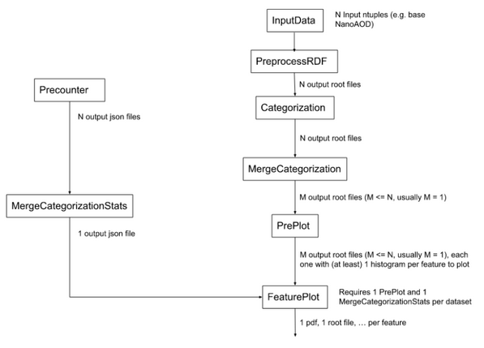
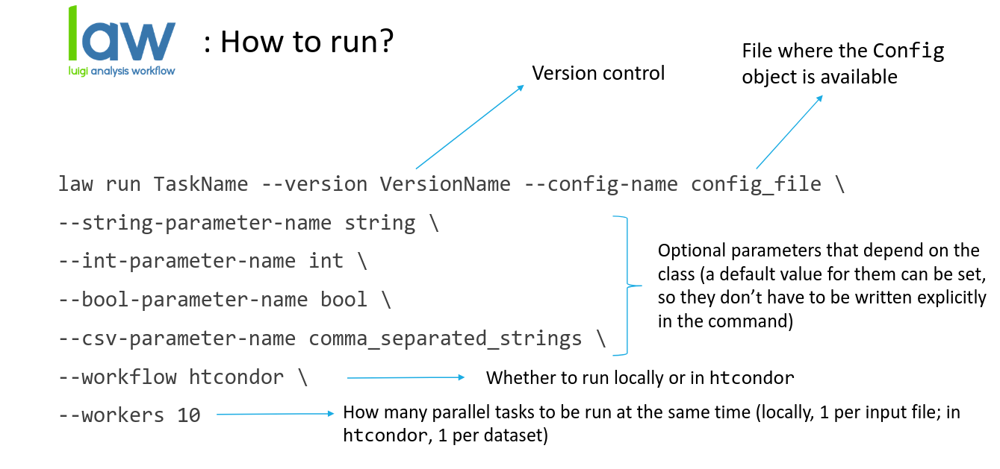

Executing tasks
NanoAOD-base-analysis execution is divided into different steps, which corresponds to different tasks, represented in the following diagram:
Where the N input ntuples refers to N branches of a dataset, so every output root file is the output file for every branch, excepting for the Merge tasks, which merge several files into one. Output files of every task can be found inside the $CMT_STORE directory.
In the diagram we can see there are two tasks branches before plotting, which we will perform separately: event counting (to apply proper weights) and the actual processing of the data/MC input files. Let’s see a description of every task:
Event counting:
PreCounter: Performs a counting of the events with and without applying the necessary weights. Weights are read from the configuration file. In case they have to be computed, RDF modules can be run. It returns one .json file per input file.
MergeCategorizationStats: Merges the output from the PreCounter task into one .json file in order to reduce the parallelization entering the plotting tasks.
Processing of the data/MC:
PreprocessRDF: Performs the preprocessing step applying a preselection and running RDF modules. Input is N ntuples files, and output is N root files.
Categorization: Performs the categorization step running RDF modules and applying a post-selection (signal categories, control…). Same behaviour as preprocessing but aimed for each analysis to run its analysis-specific features. It will look for the output of a PreprocessRDF run, and if that output doesn’t exist (because you didn’t run PreprocessRDF, for example), it will perform the PreprocessRDF as well. This task is not necessary to perform the netx step.
MergeCategorization: Merges the output from the Categorization or PreprocessRDF tasks (with the
--from_preprocessparameter) in order to reduce the parallelization entering the plotting tasks. By default it merges into one output file, although a different number can be set with the merging parameter inside the dataset definition.PrePlot: Performs the filling of histograms in parallel for all features considered. If systematics are considered, it also produces the same histograms after applying those.
FeaturePlot: Performs the actual histogram plotting: loads the histograms obtained in PrePlot task, rescales them if needed, plots and saves them. Output are .pdf files. For this task to be run both MergeCategorizationStats and PrePlot outputs are required.
The general structure of the bash commands to run each law task is:
When running each task, there are multiple parameters that can be added to do your analysis in some specific ways. For example:
--branch: there’s the possibility to use just one specific branch from your dataset (which starts in 0), several or all of them (by default).--keep-and-drop-file: useful to save only the variables you’re interested in in the output root file(s), specially for the PreprocessRDF and Categorization tasks, saving some space in the disk you’re using. It uses a .txt documment located in the reponame/config/ folder, where variables that aren’t of interest are defined (here you can see an example).--workers: indicates how many workers you want to use in parallel. When running the tasks in HTCondor with a lot of files, is specially important to put a high number (e.g. 200).
To run all tasks over several datasets in parallel, except for PrePlot and FeaturePlot, is also possible. This can be done by just adding Wrapper at the end of the task command name (e.g. law run PreCounterWrapper).
For a better understanding on how to perform a NanoAOD-base-analysis let’s take as an example an analysis for all branches of the gluon-gluon fusion standard model dataset (which is inside the main code) with no systematics, using as parameters ul_2018 configuration and modulesRDF files, base_selection and etau categories and running all jobs locally. Finally we’ll obtain some plots for the Htt_svfit_mass, Htt_svfit_pt, Htt_svfit_eta features.
law run PreCounter --version test_ggf --config-name ul_2018 --dataset-name ggf_sm --weights-file weights --workflow local --workers 10
law run MergeCategorizationStats --version test_ggf --config-name ul_2018 --dataset-name ggf_sm --workflow local --workers 10
law run PreprocessRDF --version test_ggf --category-name base_selection --config-name ul_2018 --dataset-name ggf_sm --workflow local --workers 10 --modules-file modulesrdf --max-runtime 48h
law run Categorization --version test_ggf --category-name etau --config-name ul_2018 --dataset-name ggf_sm --workflow local --base-category-name base_selection --workers 10
law run MergeCategorization --version test_ggf --category-name etau --config-name ul_2018 --dataset-name ggf_sm --workflow local --Categorization-base-category-name base_selection --workers 10
law run PrePlot --version test_ggf --category-name etau --config-name ul_2018 --feature-names Htt_svfit_mass,Htt_svfit_pt,Htt_svfit_eta --dataset-name ggf_sm --PrePlot-workflow local --workers 10 --MergeCategorization-version test_ggf --MergeCategorizationStats-version test_ggf
law run FeaturePlot --version test_ggf --category-name etau --config-name ul_2018 --process-group-name signal --feature-names Htt_svfit_mass,Htt_svfit_pt,Htt_svfit_eta --region-name etau_os_iso --stack --dataset-name ggf_sm --PrePlot-workflow local --workers 10 --MergeCategorization-version test_ggf --MergeCategorizationStats-version test_ggf --apply-weights False
This is just an example on how to run a NanoAOD-base-analysis, but more specific information on how to run each task can be found in the API Reference, where more examples can be found as well. Also the available options for each task execution command can be checked with the --help option.
Batch submission
This framework gives you the option to submit the jobs in different CPU’s infraestructures of HTCondor at CIEMAT and CERN and SGE at IC. This is possible using just a couple of parameters for the PreCounter, PreprocessRDF, Categorization and PrePlot tasks, the rest of the tasks will run in the same user interface you’re using, as they don’t require so much time to be done.
CIEMAT CPU’s:
--workflow htcondor --htcondor-scheduler condorsc1.ciemat.es --transfer-logs trueCIEMAT gaefacil01:
--workflow htcondor --custom-condor-tag "+CieRunInAF=True,+CieSingularityImage=cc7" --htcondor-scheduler condorsc1.ciemat.es --transfer-logs trueCERN:
--workflow htcondor --transfer-logs trueIC:
--workflow sge. Logs and errors are saved in the usual paths (under your home directory).
Where the parameter --transfer-logs true saves the logs from HTCondor in your repository so you can see them in the $CMT_STORE_LOCAL folder. These logs are especially useful in case you need to review any error that may have occurred during the execution of the tasks.
Verifying executions
The output files are the result of every task execution, and are located in the $CMT_STORE directory (echo $CMT_STORE to know which one is in your case). During the execution of the tasks, errors may occur that prevent the generation of all or some of the expected output files. Sometimes these errors are easy to spot and a thorough examination of them and their solution is not necessary, but on other occasions it will be needed to review that everything has worked correctly by checking a series of points such as:
Counting events from a folder: it can be done just with the following command
count_events.py foldername(the count_events.py script is defined in the setup.sh). You can also compare number of events from different folders to check if different versions are right withdiffFolderEvents.py foldername1 foldername2, and if you need to know which files are differentdiffEvents.py foldername1 foldername2. count_events.py, diffFolderEvents.py and diffEvents.py are located inside $CMT_BASE/bin.Checking condor logs: if the jobs have been submitted to condor and the parameter
--transfer-logs truehave been used, you can verify in the appropiate folder if there is any job that has not completed succesfully. This can be done doing a find of the following messageThis progress looks :( because there were failed tasks.